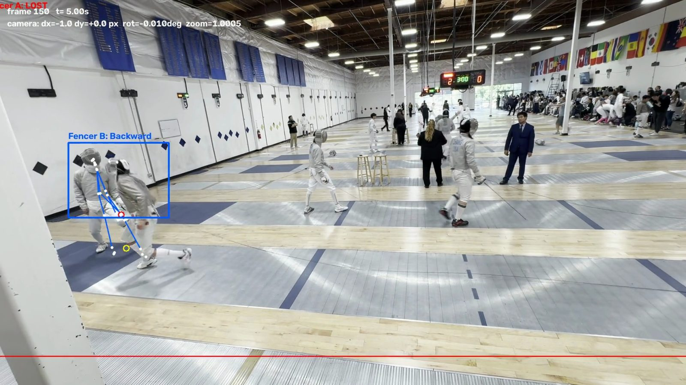

What you get from one clip
- MP4
- CSV
- LABEL
- WARN
An annotated video
Every frame with both boxes, the movement label, the body landmarks and the camera readout drawn on.
A spreadsheet
Position, speed and direction per frame per fencer, plus feet, hips, shoulders, sword hand and arm extension.
Forward, backward, still
Movement along the piste, measured after the camera's own motion has been subtracted out.
An honest failure
The frame where it lost a fencer, and why, rather than a confident number you cannot trust.
A tracker that lies is worse than one that stops
The hard part was never following a fencer. It was knowing when the tracker had stopped following the right one. My first version kept only 5 of 10 fencer tracks on the correct person, and not one of them reported a problem.

Why this matters more than accuracy
A box that has slid onto a referee still reports success. It produces speeds, distances and a tidy spreadsheet, and every number in it is about the wrong person.
You cannot spot that by reading the output. So the program refuses to give a position it cannot stand behind, and those rows in the spreadsheet are left blank rather than filled with the last thing it saw.
What actually fixed it
Four different ways of catching a drift after the fact all failed. What worked was removing the failure instead of trying to spot it.
Only track people
A person detector runs on every frame. A fencer's box has to contain a detected body, or that fencer is declared lost. A box cannot drift onto a sponsor banner, because a banner is not a person.
Detections are candidates
The detector does report the printed fencers on the venue's wall posters as people, on 15% of frames. They never get tracked, because a detection also has to overlap the fencer's box, continue their motion, and not already be claimed by the other fencer.
Momentum through crossings
Two fencers in identical kit passing each other look the same. They are carrying momentum in opposite directions though, so the body still travelling right is still Fencer A.
One body, one fencer
A detected person can be claimed by at most one fencer, so both boxes can never collapse onto the same body.
Camera movement removed
Slide, rotation and zoom are all measured and subtracted before any fencer movement is calculated. One test clip drifted 9.2% in zoom alone, and a correction that only handled sliding would have counted that as the fencers moving.
| On the fleche | Before | After |
|---|---|---|
| Peak overlap between the two boxes | collapsed onto one person | 0.24, never merged |
| Fencer A at the end | silently tracking a referee | declared lost |
| Identity through the pass | close to a coin flip | both boxes on the correct fencers |
The measurements, including the bad ones
The benchmark is five segments from four competitions, chosen to be difficult: fencers between 100 and 450 pixels tall, one clip at 960x544, heavy motion blur, hand held panning, and a back wall covered in large photographs of other fencers.
| Case | What the box ended up on |
|---|---|
| portland-fleche A | a referee standing still |
| seattle-lowres B | a spectator's dark hair |
| sf-blur-posters A | the ceiling edge |
| sf-blur-posters B | the scoreboard |
| cincy-pan-blur A | a sponsor banner |
Four ideas that did not work, and the numbers that killed them
These are here because they are the reason there is one automatic check in the code instead of five.
| Idea | Why it failed |
|---|---|
| Cap how far a box may jump per frame | A correct box during a lunge jumped 0.284 times its own height. The drifting box jumped 0.356. Another drift jumped 0.194, less than the correct lunge. |
| Compare tracker motion against optical flow | Correct tracking during a blurry lunge disagreed by 116px. A real drift disagreed by 157px. The two overlap. |
| Make the tracker give up sooner | At one threshold nothing changed at all. At the next it declared failure at frame 30, in the middle of a good lunge. |
| Use pose confidence as a warning | It stayed above 0.97 the whole time a box was tracking the wrong people, because those people are real bodies. |
None of them separated a real drift from a real lunge. Tuning was not the answer.
There was a browser version. I removed it.
It ran the tracking in JavaScript so it needed no install at all. To do that it had to drop the CSRT tracker, which has no browser equivalent, and cut the camera correction down to sliding only, because doing it properly means shipping 8MB of OpenCV.js.
Neither cut is small. On the panning Portland clip the camera rotates 1.01 degrees and zooms 1.0924x, and a sliding-only correction ignores both. So the browser version was quietly less accurate than the Python one on exactly the footage that is hardest, and nothing in the repo could have told me by how much, because the two versions shared no tests.
Two implementations of one algorithm in two languages drift apart, and the copy is the one that loses. There is now a recorded trace for every benchmark case and one command that says whether behaviour moved, which is what I should have built before writing a second version.
One measurement from it is worth keeping. I first shipped it with a smaller detector because it loads in half a second instead of downloading 36MB. Over 221 frames of the fleche clip that was a bad trade.
| Detector | People found per frame | Frames a fencer was lost |
|---|---|---|
| Small, EfficientDet-Lite0 | 6.0 | 94 |
| YOLOX, same as Python | 12.9 | 6 |
The small one was finding half as many people, so it was simply missing fencers. Detector size is not somewhere to save load time.
Filming matters more than the code
I measured the filming conditions of every test clip frame by frame and lined them up against what happened. One clip tracked both fencers cleanly, and it is also the only one filmed with a pan under 10 px/s and no zoom.
| Clip | Pan speed | Zoom drift | Result |
|---|---|---|---|
| Portland, steady | 5.5 px/s | 0.1% | both tracked |
| Portland, fleche | 40.6 px/s | 12.2% | A lost late |
| Seattle D2 | 41.6 px/s | 0.1% | B drifted onto a spectator |
| SF AFM | 93.6 px/s | 7.5% | both failed |
One surprise: resolution is not the bottleneck. The Seattle clip is only 960x544 and the detector still found the fencers on 100% of frames, the best score of any clip. Put the phone on something solid and stop zooming, and you will get more out of this than any change to the code will give you. The full guide is in FILMING.md.
Using it on your own bouts
It runs on your own computer. Nothing is uploaded, there are no accounts, and your footage never leaves the machine. Two pip packages, and the pretrained models are fetched once at setup.
-
Install it once
Clone the repository and run the setup below. A few minutes, most of which is downloading the models.
-
Open the local page
Run
python3 webapp.pyand open the address it prints. Paste the path to a clip so nothing gets copied, even for a 300MB file. -
Scrub to the phrase, box each fencer
Drag a box around the mask and torso only, not the legs. On a real clip a full body box slid onto the referee after 49 frames, while a torso box followed the fencer correctly the whole way.
-
Run it, then read the losses
You get the annotated clip and the spreadsheet. Check the frames it reported as lost, and re-select that fencer there if you want to carry on.
git clone https://github.com/matthewyongenwang-coder/riposte.git
cd riposte
python3 -m venv venv && source venv/bin/activate
pip install -r requirements.txt
python3 get_models.pyThen the local page:
python3 webapp.pyOr straight from the terminal:
python3 main.py "bout.MOV" --detect --poseWhat it cannot do
Listed because you should know it before you rely on any number it gives you.
- Blade actionsThe blade is 2 to 3 pixels wide when still and gone entirely during a lunge. That is the footage, not the algorithm, and filming in slow motion is the fix.
- Right of wayIt measures where bodies are and how they move. It does not know who attacked, and it cannot tell you who a touch should go to.
- Telling your fencer apart from any otherNothing here recognises a person. You pick the two fencers by hand on the first frame, every time.
- CrossingsStill the hardest moment, and worth checking by eye. A box can also settle on a different person standing where the fencer was predicted to be, because a spectator is a real person and nothing objects.
- Sample sizeFive clips from four competitions is not a large sample, and every percentage on this page should be read with that in mind.
What is coming
Riposte is the first piece of a bout analyzer. Nothing below this line is built yet. It is listed so you know what the tracking is for, not as a promise.
The tracker
Everything on this page, from the terminal or the local page. Tested on macOS. It is plain Python and OpenCV, so Windows and Linux should work, but I have not checked them.
A real app
A version you double-click, with nothing to install and no terminal. The same engine underneath, so the numbers stay the same.
A record of your bouts
Every bout kept, per opponent, so distance and tempo can be compared across a season instead of one clip at a time.
Distance and tempo you can read
Real units instead of pixels, from a four tap calibration against the 14 metre piste, with the measurement error published next to it.
A physical trainer
A moving target that sets distance and tempo, driven by what the analysis found in your own bouts.